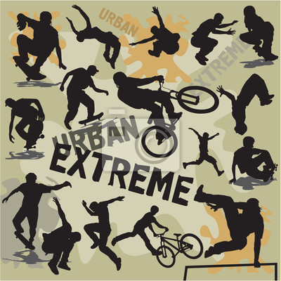

Deportes Urbanos
Definimos los Deportes Urbanos y Nuevas Tendencias como todos aquellos deportes de riesgo controlado, relacionados
a las actividades de ocio y con algún componente deportivo, cuya práctica está sujeta a espacios y condiciones dadas por la urbe.
Como tal, la práctica de todos estos deportes, además de la actividad física, involucran una serie de reglas y/o normas a desempeñar
dentro de un espacio o área determinado, y donde la capacidad física y técnica del competidor son la base primordial para determinar su resultado.

Los deportistas urbanos y nuevas tendencias, practican sus deportes desde la motivación propia, como complemento a su cotidianidad
y alimento en su crecimiento personal y desarrollo social. Estas prácticas, en muchos casos, continuas,
disciplinadas y de mucho rigor, promueven hábitos de vida saludable entre los jóvenes, son espacios para el desarrollo.
Skate
El Skateboarding es un deporte urbano que se practica sobre un monopatín, y sobre una superficie plana, en cualquier lugar donde se pueda rodar: en piscinas, escaleras o simplemente en la calle, en la actualidad existen, en muchas ciudades en el mundo, espacio acondicionados para la práctica de este deporte llamados skateparks.
Roller

Es una modalidad extrema de patinaje que se practica utilizando patines en línea (línea corta) que se pueden deslizar sobre rampas adaptadas y/o diseñadas especialmente para la práctica de esta actividad. Esta disciplina se puede llegar a adaptar a la mayoría de espacios y lugares que son utilizados por el skate, incluyendo los skate parks.
Biker
Es una modalidad acrobática del ciclismo cuyo origen fue California en los años 70’s. De acuerdo al lugar de práctica y especialización de cada deportista esta modalidad puede dividirse en: BMX Park, Flatland, Dirt Jump, Street.
Parkour
También conocido como l’art du déplacement (el arte del desplazamiento), es una disciplina deportiva urbana que consiste en desplazarse de un punto a otro, usando trucos y maniobras creativas, aplicadas lo más fluidamente posible, partiendo principalmente de las habilidades técnicas del deportista. Esto significa superar obstáculos que se presenten en el recorrido, tales como vallas, muros, paredes, etc. (en ambientes urbanos) e incluso árboles, formaciones rocosas, ríos, etc. (en ambientes rurales). Los practicantes del parkour son denominados traceurs (traceuses en el caso de las mujeres)
Nos vamos a concentrar en dos modalidades las cuales son el skate y el parkour.
El skateboarding o monopatinaje1 es un deporte que consiste en deslizarse sobre una tabla con ruedas y a su vez poder realizar diversidad de trucos, gran parte de ellos elevando la tabla del suelo y haciendo figuras y piruetas con ella en el aire.2 Se practica con un skate ('patineta' en otros países latinoamericanos), tabla de madera plana y doblada por los extremos y que tiene dos ejes (trucks) y cuatro ruedas, y con 2 rodamientos en cada una de sus 4 ruedas, preferentemente en una superficie plana, en cualquier lugar donde se pueda rodar, ya sea en la calle o en los skateparks.
Historia
El surgimiento de este deporte extremo recae en el estado de California para los años 1960 y 1970, época en la cual los deportes extremos como el surfing gozaban de un gran auge (época de modalidad) mundialmente. El motivo principal de la creación del skateboard se basa en la sustitución de la tabla de surf en tierra. Los primeros diseños de estas consistían en solo un pedazo de madera cualquiera alterado con ruedas de patines principalmente. Luego para el año 1972 se comenzó a fabricar "skateboards" con una tecnología más avanzada y específica para esa modalidad. Los materiales de fabricación consistían en hierro suave, de poca resistencia, arcilla y caucho. Más adelante en 1972 se comenzó a notar por medio de revistas y los medios de comunicación este interés por las "skateboards". Para los años 1975 y 1980 ya la modalidad estaba dispersada por toda América. Finalmente para el comienzo de los años 1980, el "skateboarding" estaba expandido por cada rincón del mundo, la juventud la adquirió como suya, al igual que los espacios públicos, ya que estos son el "field" para poder practicar el deporte.4 Creado a partir de una variación del surfing, este suele ser un reclamo publicitario para los jóvenes (skaters o no). Sobre los que patinan, un reportaje del año 2002 para la American Sports Data estimó que había 13,5 millones de skaters en todo el mundo; siendo el 84% menores de 18 años, de los cuales el 74% eran hombres y el 26% mujeres. En 1963 en la ciudad de California, tuvo lugar el primer campeonato de skateboard y dos años después ya se había multiplicado la cantidad de skaters y se comenzaron a organizar los primeros campeonatos internacionales (1965).
Algunos de los trucos mas conocidos son:
- ollie: es un truco aéreo sin manos, fue inventado por Alan "Ollie" Gelfand en 1978.
- shove-it: tiene dos variantes, el shove-it, y el pop shove-it. El primero consiste en girar la tabla en 180° grados hacia enfrente deslizándola sobre el piso y caer sobre ella. El segundo es botar la tabla contra el suelo y hacer el mismo giro
- shove-it: tiene dos variantes, el shove-it, y el pop shove-it. El primero consiste en girar la tabla en 180° grados hacia enfrente deslizándola sobre el piso y caer sobre ella. El segundo es botar la tabla contra el suelo y hacer el mismo giro
- shove-it Sex change: consiste en lo mismo que el shove-it pero dando el giro hacia atrás y también tiene las dos variantes.
- frontside o frontside 180: consiste en dar un giro de 180° grados girando hacia atrás a modo que se vea la parte frontal de tu cuerpo si te ven de frente.
- backside o backside 180: es lo mismo que el frontside solo que dando la espalda si te ven de frente
- kickflip: consiste en que la patineta de un giro de 360° a lo largo del eje hacia atrás.
- heelflip: es lo mismo que el kickflip pero dando el giro hacia adelante.
Los ganadores de la liga Skate tampa 2017 Fueron:
- Louie Lopez
- Tory Pudwill
- David Gonzales
En el siguiente mapa podran observar los skateparks que se encuentran en la ciudad de Bogotá D.C
Algunas de las mejores marcas son:
| NIKE SB |
ELEMENT |
PLAN B |
| CREATURE |
PRIMITIVE |
ADIDAS |
| AMATEUR |
OLLIE |
CAPITAL KICKS |
Breve Historia del Parkour
El Parkour comienza su desarrollo hacia finales de los años 80 en Francia en los juegos de ciertos jóvenes que motivados por el método natural y las grandes hazañas físicas realizadas “Raymond Belle” en su paso por los bomberos de parís, este ultimo padre de David Belle a quien se le atribuye la creación de este deporte, por su especial liderazgo físico, e iniciador de las bases de lo que hoy conocemos como Parkour y aunque inicialmente no tenía un nombre definido, estos jóvenes se dedicaron a desarrollarse físicamente con el ánimo de ser mas fuertes, al tiempo que mostraron una condición física mayor se dieron cuenta que podía realizar cosas sorprendentes y comenzaron a ver nuevos retos, en estos retos sobresalía David quien impuso estándares cada vez mayores y a los cuales entre ellos comenzaron a darles nombre, como saltos de gato, pasa murallas, precisiones etc.
David Belle
Siempre pareces ser más fuertes cuando entrenas con los demás. Pero eres aún más fuertes si tienes éxito en superarte a ti mismo cuando entrenas solo.
Algunos de los trucos mas conocidos son:
- Salto de precisión: Este es un salto de ‘longitud’ sin carrerilla, en el que el fin será una recepción precisa en una valla, muro o bordillo estrecho. Este salto puede realizarse “a un pie” o “a ambos pies”, lo que quiere decir que recepcionaremos el salto con uno o ambos pies..
- asa-murallas: Se trata de sobrepasar un muro alto; se necesitará carrerilla para llegar a la cima del muro, pegando una patada sobre este para subirnos, y arriba nos agarraremos con las manos (una y después otra si es demasiado alto) para subir a pulso.
- Grimpeo: Grimpear en parkour, es una escalada rápida, bien de un muro con una inclinación pronunciada, un árbol, etc.
- Plancha (de planche en francés): Consiste en llegar a una posición donde nos aguantemos sobre las manos (a la altura de la cintura) en una barra horizontal, desde una posición donde estemos colgado de las manos, estirados totalmente. Es un ejercicio de fuerza que ayuda en los pasa-murallas.
- 180: Se trata de dar media vuelta en el aire, contra un obstáculo (muro o valla), para acabar con las manos en él, del otro lado, y en una posición de la que podamos descolgarnos.
- Balanceo: En una rama o barra, trataremos de colgarnos con las manos en el, para dejarnos oscilar. Para salir hacia delante hay que tener cuidado de no caerse hacia atrás. Hay que mantener un equilibrio en el que consigamos mantener la posición en el aire, para recepcionar correctamente.
- Laché (nombre francés): Colgado de una rama, soltamos las manos para recepcionar en otra, ya sea más baja, más alta o paralela, manteniendo una posición en el aire que nos de equilibrio y amortiguación.
- 360º: Se trata de hacer un giro de 360º sobre un apoyo ayudándonos sólo de las manos.